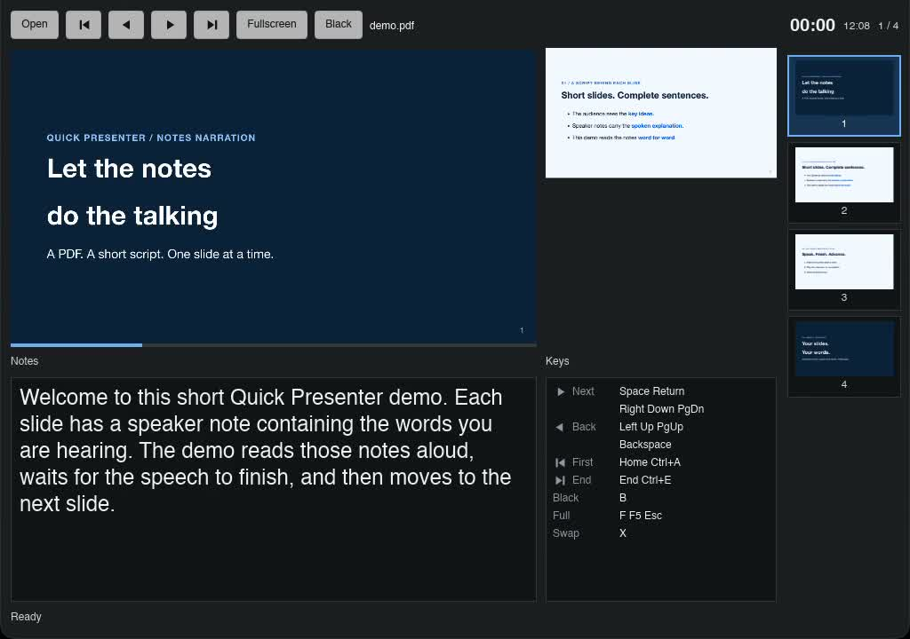

Give agents the context.
Get current and next slide text, speaker notes, and presentation state as JSON. Use the PDF as the source for your agent’s explanation.
qp context --full --jsonQuick Presenter · OPEN SOURCE
Quick Presenter lets AI agents read your slides and speaker notes, control your presentation, and build on those capabilities in their own way.

One PDF. Two ways to present.
Autopilot follows your prepared notes. Agentic Presentation responds to questions as they come. Put slide context and presentation controls to work with your own tools.
Speaker notes · Automatic slide advance
A real PDF. Its original speaker notes. A local voice. Watch the presenter view follow the narration, one slide at a time.
The external runner reads speaker notes embedded in a Marp PDF through qp.
Local speech synthesis (Kokoro) turns each note into audio. The runner waits for playback to finish.
The CLI advances the slide. The current view, notes, and next-page preview follow along.
This demo reads your words verbatim. Kokoro is an optional external engine; Quick Presenter provides the PDF context and playback controls.
Try the demo yourselfSlide 1. Welcome to this short Quick Presenter demo. Each slide has a speaker note containing the words you are hearing. The demo reads those notes aloud, waits for the speech to finish, and then moves to the next slide.
Slide 2. The audience sees only the key ideas on this slide. The full explanation lives in the speaker notes embedded in the PDF. This demo reads that explanation word for word. It does not invent an explanation or read the bullet points instead.
Slide 3. Notice that this slide stays on screen while the narration is playing. Only after the speech finishes does the demo ask Quick Presenter to move forward. If speech playback fails, the demo stops without sending a page change. Keep presentation control exclusive while the demo runs.
Slide 4. That is the end of the demo. The presentation will stay on this final slide. To make your own version, edit the slide text and the speaker notes in the Markdown source, then export a new PDF with Marp's PDF notes option enabled. Thank you for listening.
Questions · Improvised answers · Interrupt and resume
Type a question to an external AI agent during the presentation. It refers to the current slide and speaker notes, answers on the spot, navigates to relevant slides, and resumes the flow.
Interrupt the presentation and type an open-ended question to your external AI agent.
The agent reads slide text and speaker notes through the CLI and generates an explanation for your question.
Show the relevant slide, then return to the presentation after the conversation.
The external AI agent generates answers and decides how to proceed. Quick Presenter provides the interface to PDF context and presentation controls.
Explore the CLI behind your agentNew in 2.0 · A stable automation interface
The qp CLI gives scripts and AI agents structured access
to the same PDF you are presenting. Build your own workflow around
clear source context and explicit playback controls.
Get current and next slide text, speaker notes, and presentation state as JSON. Use the PDF as the source for your agent’s explanation.
qp context --full --jsonOpen a deck, move to a page, or set the audience blackout state. Keep generation and speech in the tools you choose.
qp next --jsonStream presentation changes as newline-delimited JSON. Query status when you need rendering and note readiness.
qp watch --jsonBring your own agent
Use a local model, a hosted service, or a deterministic script. Your agent owns narration and audio; Quick Presenter owns the PDF and presentation state.
The included Python reference checks readiness, waits for audio completion, and stops on failure before advancing.
Explore the CLI reference# Open your prepared PDF
qp open talk.pdf --json
# Read slide text, notes, and state
qp context --full --json
# Your agent generates and plays narration.
# Advance only after the audio finishes.
qp next --json
# Or observe presentation changes
qp watch --jsonStable contract. Control Protocol v1, JSON results, typed errors, and documented exit codes give automation a supported interface.
Choose the right package. CLI control supports macOS Developer ID / DMG, Windows Store, and Linux. Mac App Store control is outside v2.0.0.
Essential workflow
Presenter window
The speaker-facing window keeps the active slide, next slide preview, speaker notes, timer, clock, and page position in one place.


Audience output
The audience-facing slide window stays dedicated to the deck, while presenter details remain on the speaker side.

PDF-first playback
Quick Presenter treats PDF as the source of truth, avoiding authoring features that can complicate the live playback path.
Designed scope
PDF is the only presentation input format.
No slide editing, authoring, or design tools during playback.
Rendering, page transitions, and failure recovery are the priority.
Open source
Quick Presenter is developed as an OSS desktop app with public source, release notes, packaging documentation, and issue tracking.
Support development
Quick Presenter will remain focused on reliable PDF playback, while the stable CLI opens presentation operations to your scripts and agents. Supporting development helps keep playback reliable across platforms.
Buying through desktop app stores is the planned donation-friendly way to support the project while keeping the source code open.
Get started with 2.0
Get Windows from Microsoft Store. For CLI automation on macOS, choose the Developer ID / DMG package; Linux packages are also available through GitHub Releases. Check the release version and notes before installing.
Open macOS and Linux releases